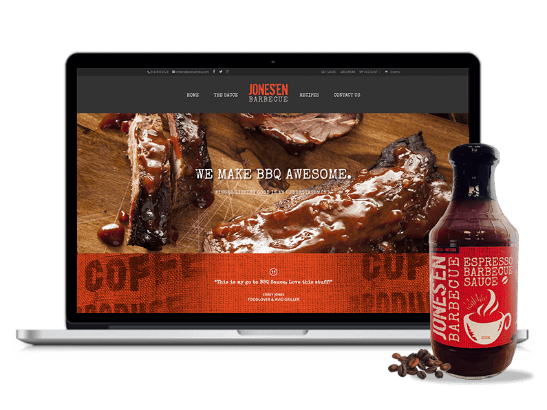
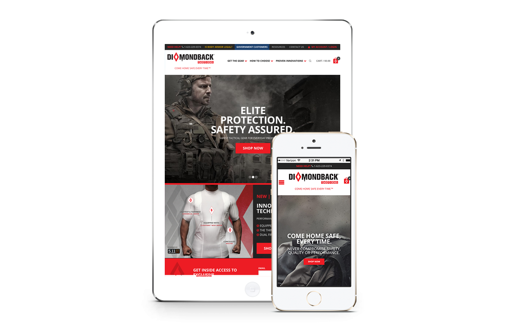
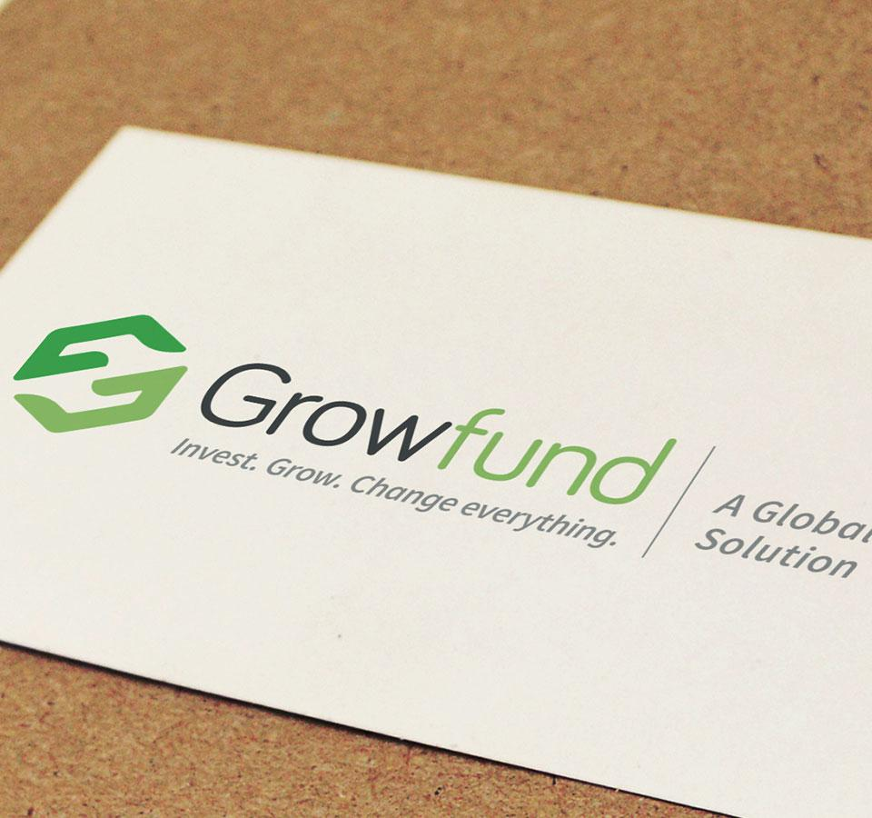

Short Bio
Corey is a passionate designer with a love for all things design. He live by the motto of love what you do and do what you love. Jones strive to inspire others with his work and never take his self too serious.
Very Humble Beginnings
I grew up in a small town outside of Pittsburgh, PA (go Steelers), in Johnstown, PA. I come from very humble beginnings in a lower class community. Growing up on government assistance I learned very early on, how to hustle and just work hard for what you want. I have two siblings, little sister and a twin brother who is a chef and 2x Food Network, winner. I had a great family life with some positive influences (some not so positive, but who doesn't). My siblings and I were one of the first to attended college. We grew up in an area that could have taken our lives in a very different direction. I have experienced racism, watched close family members lose their lives to violence, drugs & Alcohol. All of these experiences growing up just motivated me to get out and succeed. I wanted to inspire the next generation of my family and give them someone to look up to.
How did you first get interested in design?
I was always very artistic growing up, and if you didn't find me on the basketball court, I was drawing. I had an older cousin who could draw really well, and I remembered being amazed that someone could create these awesome things with a pencil and paper. I would read comics, watch cartoons and think wow someone made those, so I began trying to create my own art. I was in high school started thinking about what I wanted to do "hmmm, NBA? Chef, love to cook?....Art, I can draw?" So realized a few things, one I am 5'5", 5'6 on a good day so NBA is not likely, love to cook but didn't really see myself in a kitchen all day (besides, I had to let my brother be good at something sibling-rivalry), But art now that made sense, I just wasn't sure it made money or what kind of art. Being able to draw really well I was encouraged to pursue a career of making cartoons. I enrolled in the Animation program at the Art Institute of Pittsburgh....a long story short ended up switching to Graphic Design which seemed satisfy my urge to experiment with other areas of art.
Tell me about the work you've done?
I have had the privileged to work with many clients from major brands to small start-ups. My work is a good mix of media. I am an illustrator, designer, web designer, motion designer and animator in training. The one thing I always find myself going back to is branding or brand expression, everything I do revolves around solving brand problems.
What are your proudest accomplishments of your career?
It's tough to pick one accomplishment; I have had the opportunity to work on some amazing things. But if I were to pick one it would be my most recent work for The Smithsonian's National African American Museum of History & Culture. I served as the lead designer on the project with some amazingly talented co-workers at Forum One. Working on this project I found myself getting lost in work, I felt a deep sense of obligation to make this site, not just good but great. It came with some hurdles, but we remained confident, constantly pushing our client to think beyond the screen. We wanted the site to be an experience, a destination, something we are still striving towards to this day. I am proud of this site because it allowed me to push myself. My designs were influenced by sites like Nike and other major commercially focused sites. I didn't want to look at other museum sites to design a museum site; I looked everywhere. You can see this in things such as the collection slider on the homepage; I observed how the apparel and footwear industries showed off their products. I remember thinking why can’t we take these amazing objects and allow the users to connect with them visually and emotionally, with the foreground object tying to a background photo that showcases a moment in time that connects to that object's story. Each object then goes to detailed story page the talks about the history of that piece. I often describe this feature as the soul of the website. Lastly, I am proud of this site because it reminded me that the black experience is my experience. Looking at the images and objects, I began to reflect on my own family and in a past talk I made a clip of what this project meant to me and how it tied to my family, see https://www.youtube.com/watch?v=X7d72sADO_4
What have been your biggest struggles of your career?
It always seemed that I had to work so much harder in my career. Working for a string of small firms trying to stay one step ahead of my counterparts. I have always had to just make my presence felt to get opportunities that seemed to come easily to others.
What are you doing that's special that sets you apart from your careers.
The one thing that has always allowed me to stand out in my career was my personality. I have always been a very hard worker and serial learner but the one thing people notice the most is my energy and spirit. I am very positive, love to have fun and make others around me BETTER.
Being a person of color in this industry is like walking into a small town diner with no one else who looks like you.
What have your experience been as a person of color in the design industry.
Being a person of color in this industry is like walking into a small town diner with no one else who looks like you. (record scratch, music stops). I joke around, but I always felt alone, even though I grew up in a mixed-race family it was always clear that I was black. For the most part, I think I have been treated fairly, but I believe that this was due to my personal drive and will to succeed.
What would you like to see changed about the design field?
I would love to see more diversity in the design field. I would love to see more designers like myself being recognized. I want young black designers to see this industry as a viable career path and become inspired by those like them.
How can design be more accommodating to underrepresented populations of people.
I think having more design centric programs introduced early on in the school systems are key. Design shops should be striving to be more inclusive and take the time to give back to the communities in which they operate.
What are you working on right now, either for work or for yourself?
People often ask me "when do you sleep," I am currently studying animation/motion graphics. I run my own bbq sauce business with my brother jonesenbbq.com (best sauce you never tried!) plug: it's a coffee infused bbq sauce that will wake up your next bbq. I am a partner at a small audio startup where my partners and I have invented the first speaker/football pairing (project still in works/patent pending). I am always dabbling in different things; I love learning new things and trying to get better at what I do.
For those in design, you can overcome all obstacles if you just remain positive and work hard. Instead of focusing on your challenges, just strive to be the best, continue to churn out amazing work.
What advice would you give to folks from similar backgrounds who are in design or hoping to get into it?
For those in design, you can overcome all obstacles if you just remain positive and work hard. Instead of focusing on your challenges, just strive to be the best, continue to churn out amazing work. If you are hoping to get into design, you get what you give in this career. This industry can be fun and profitable.